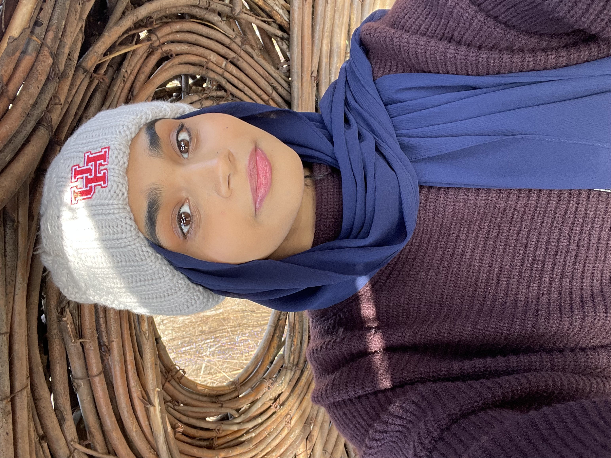

Syeda Hussain is an amazing chef who has brought her passion for creating unforgettable dining experiences to UHSL Cafe, which has become a cherished hub within the university community. Syeda infuses every aspect of the cafe with a blend of creativity, warmth, and excellence that you can taste in every bite. Syeda's love for food started in her youth, where she found herself immersed by the Food Network. Driven by a relentless pursuit of perfection and a commitment to her craft, she honed her skills and embraced her entrepreneurial spirit.
In 2024, Syeda Hussain's dream finally became a reality as she unveiled UHSL Cafe, an oasis of culinary delight nestled within the bustling campus. Here, students, faculty, and visitors are welcomed with open arms, an inviting ambiance, and tantalizing aromas that promise a memorable dining experience. When she's not busy orchestrating the symphony of flavors at UHSL Cafe, Syeda can be found exploring the latest culinary trends, spending quality time with her family, or chatting with patrons about anything and everything.